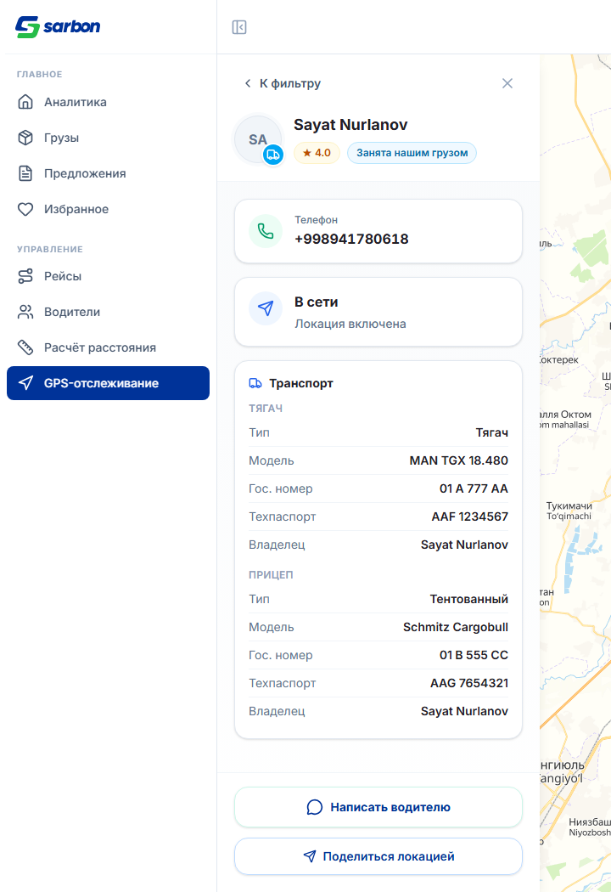
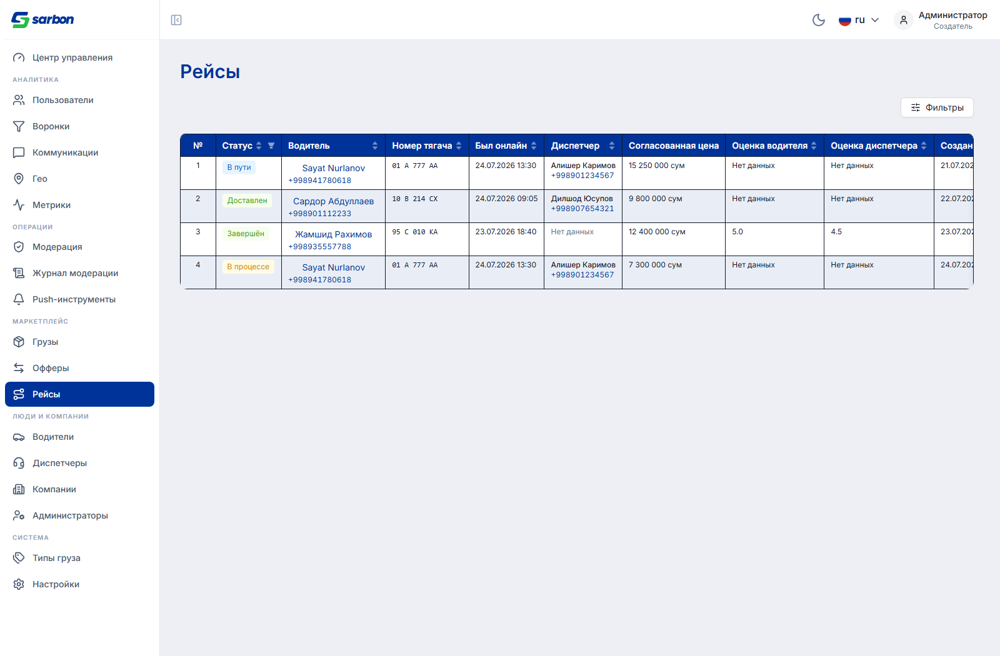
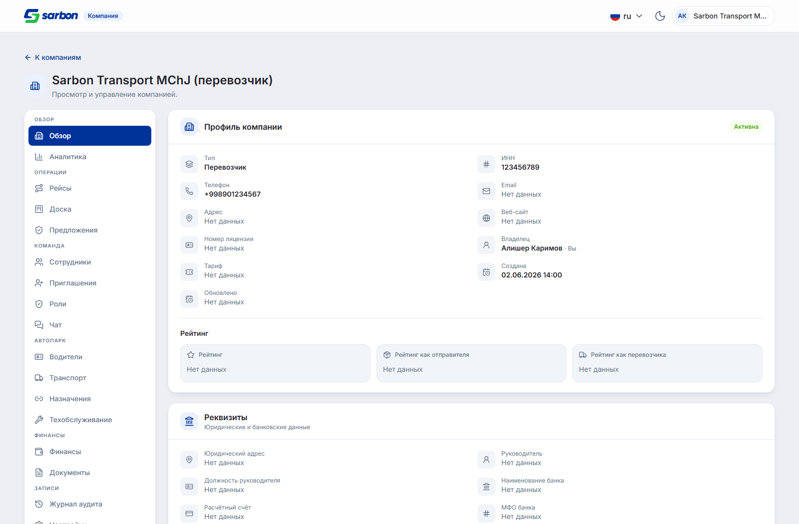
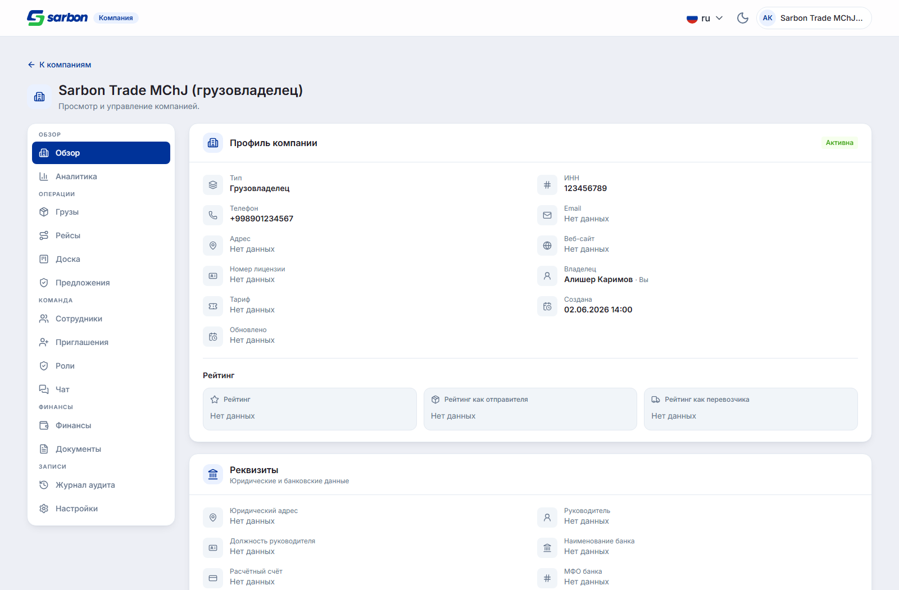
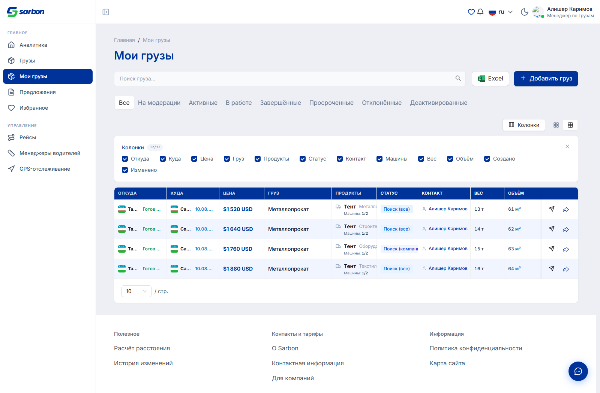
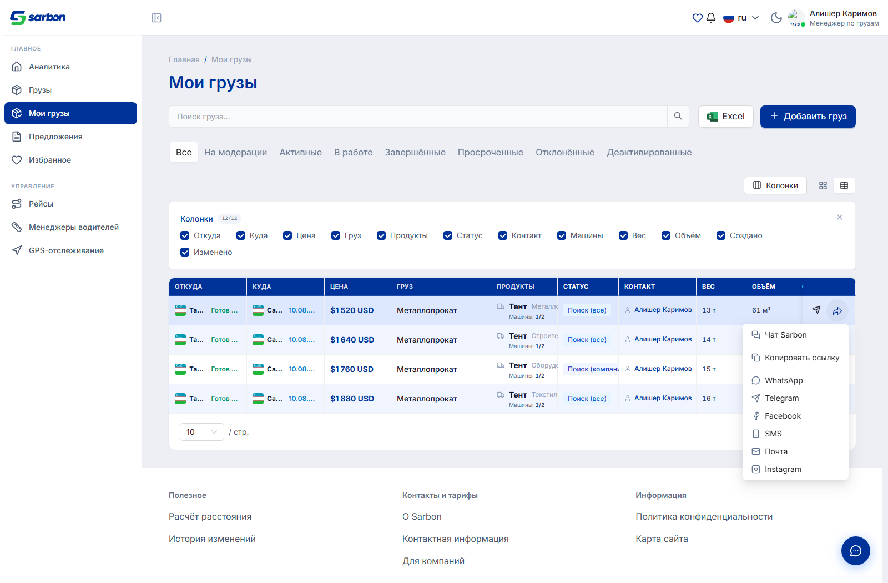

origin/staging, чтобы
pull request сливался без конфликтов.
На странице GPS-отслеживания менеджер по водителям кликал по своему водителю — и открывалась почти
пустая карточка. Запрос GET /v1/dispatchers/drivers/:id уходил и возвращал данные
(в сети видно телефон, координаты, ТС), но панель их не показывала: телефон не выводился нигде,
а транспорт схлопывался в одну строку. У водителя без маршрута/ТС середина модалки оставалась пустой.
tel:) — показывается, когда телефон доступен
(для менеджера по водителям), скрыта для ограниченных ролей./drivers/:id больше не затирает данные о ТС/рейтинге, уже известные из ростера.gpsTrackingPage.* добавлены во все 15 локалей.
+998941780618, статус в сети, и полный разбор ТС: тягач (MAN TGX, гос. номер, техпаспорт, владелец) + прицеп (Schmitz).
Панель рисует карточки условно: статус-сообщение, реалтайм-присутствие, маршрут, ТС, диспетчер.
У водителя без маршрута и без единой строки о ТС оставалась только карточка «в сети», а
телефон не выводился вовсе — хотя detail.phone уже был заполнен. Теперь
телефон и структурированный разбор ТС закрывают эту пустоту.
DriverDetailSidebar.tsx (карточка телефона + SpecRow + карточка
«Транспорт»), useGpsDetailSelection.ts (наложение непустых полей), types.ts
(truck/trailer получили model/owner).
В админской таблице рейсов (/admin/trips) по каждому рейсу были только базовые поля.
Требовалось показать имя и телефон водителя, номер тягача, время последнего онлайна и — если у
водителя есть диспетчер — его имя и телефон.
base.yaml#/Trip): рейс несёт только плоские id
(driver_id, driver_manager_id, …) плюс vehicle_snapshot —
встроенных объектов водителя/диспетчера нет. Поэтому решено без изменений бэкенда, по
устоявшемуся админскому паттерну: подгрузить списки /v1/admin/drivers и
/v1/admin/dispatchers один раз и соединить по id (а не N+1 запрос на строку).
driver_id).vehicle_snapshot.power_plate_number рейса (с запасным
вариантом — гос. номер из карточки водителя).last_online_at водителя.driver_manager_id (запасной путь —
freelancer_id водителя); при отсутствии показывает «Нет данных».
adminTripParticipants.ts + 19 юнит-тестов.
Кабинет компании показывал вкладку «Грузы» и кнопку «Добавить груз» всем компаниям. Перевозчик
(CARRIER) предлагает транспорт, а не груз, и постить груз не должен (бэкенд и так
отклоняет создание с company_type_forbidden). Кнопка была завязана только на право
cargo.create, которое у владельца «срабатывает по умолчанию» — так перевозчик видел
кнопку, которая всё равно 403.
CARRIER через forbiddenForTypes: ['CARRIER']
в реестре секций — она исчезает из навигации, а deep-link ?tab=cargo откатывается на
обзор. У SHIPPER/BROKER вкладка остаётся.companyTypeAllowsCargoCreation
гейтит саму кнопку создания в секции.company_type_canonical ?? type — как и в остальном кабинете.

companyWorkspaceSections.ts (реестр), companyCargoForm.ts
(companyTypeAllowsCargoCreation), CargoSection.tsx (гейт кнопки) +
2 теста реестра + 3 теста предиката.
В таблице «Мои грузы» у менеджера по грузам не было способа поделиться собственным объявлением — кнопка «Поделиться» жила только в «Общих грузах», из-за чего приходилось идти в отдельный список.
CargoShareMenu (то же модальное окно «Чат Sarbon», те же ссылки и
эндпоинты) добавлен в колонку действий таблицы «Мои грузы» — кнопка на каждой строке.

| Проверка | Результат |
|---|---|
Сборка pnpm build (tsc -b + vite) | 0 ошибок |
ESLint --max-warnings 0 (изменённые файлы) | чисто |
Юнит-тесты pnpm test (после слияния) | 2379 / 2379 · 203 файла |
| Новые чистые модули + тесты | adminTripParticipants (19) · companyCargoForm (+3) · companyWorkspaceSections (+2) |
| Локали | 15/15 парсятся с новыми ключами |
origin/staging
10 коммитов (редизайн операций компании + рейсы). Прямой pull был небезопасен (грязное дерево +
пересечение по CargoSection.tsx и локалям), поэтому итог выложен в отдельную ветку,
в которую затем влит origin/staging: единственный содержательный конфликт —
строка сигнатуры CargoSection (у коллеги добавлен i18n, у нас —
company) — сведён вручную, bug.md и локали слиты без потерь. Ветка теперь
строго впереди staging (0 позади / 3 впереди) — PR сливается чисто.